All-terrain and off-road fire fighting vehicles
Get a quoteOff-road fire engines are used to extinguish fires outside populated areas. Their use is greatest in extinguishing forest fires. Forest fires are one of the most devastating natural disasters causing enormous material and environmental damage. In these fires, wild and domestic animals are burned, and valuable plant species are burned, the restoration of which takes decades. People die and their homes are burned. Forest fires are not expected to decrease under conditions of global warming. It is expected that their quantity and scale will increase with all the resulting harmful consequences for people, nature, and the economy of individual municipalities and countries.
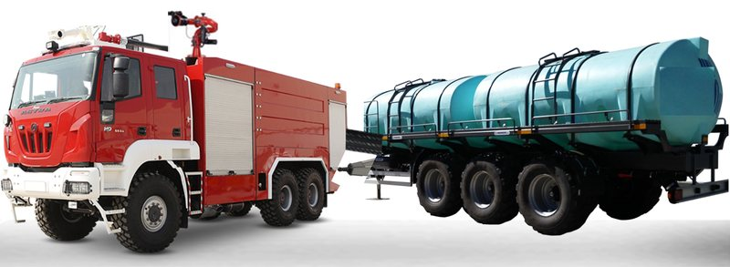
Unfortunately, every year during the seasons of forest and field fires, it turns out that these fires find us unprepared, and the actions taken to extinguish them turn out to be poorly effective. This is because, in practice, municipalities and fire departments lack specialized off-road firefighting equipment for extinguishing forest fires. For extinguishing forest fires, fire trucks with normal and increased cross-country ability, intended for extinguishing fires in populated areas, are used. Their technical parameters and extinguishing agent capacity are not adequate to the requirements for extinguishing forest fires. The result of this is the low efficiency of firefighting, exposure to risk to the life and health of the employees carrying out firefighting in the forests, and breaking of the fire trucks that are adapted for extinguishing fires in populated areas.
For the successful extinguishing of forest fires, are necessary powerful off-road fire trucks with a clearance of over 400 mm and large amounts of water 25.000 L – 30.000 L, and trailers up to 50.000 L – 70.000 L. These big volumes turn fire trucks and fire trailers into mobile water body reservoirs that can independently participate in forest fire extinguishing or supply water to other fire trucks, motor pumps, and helicopters involved in firefighting. Knowing well the tactics of extinguishing forest fires BULFIRE Ltd. put into production specialized fire trucks and fire trailers extinguishing forest fires. For the successful extinguishing of forest fires, each municipality must have at least 1-2 such off-road trucks able to pull a fire trailer with 50.000 L – 70.000 L of water which will guarantee successful fire extinguishing without interruption of the water supply.
For the production of trucks for work in severe off-road conditions, a base chassis is selected with a structure specially selected for this purpose. The materials for the production of these chassis are significantly strengthened. The clearance is high and can reach or even exceed the clearance of some tractors. The power and the ambient temperature range of the engines ensure trouble-free operation in extreme conditions. The gear ratios of the gearboxes and transfer boxes are selected for driving at low and high speeds in severe off-road conditions. The large load capacity, locking differentials, and other specific technical options ensure that these off-road trucks will fulfil any task for which they are intended.
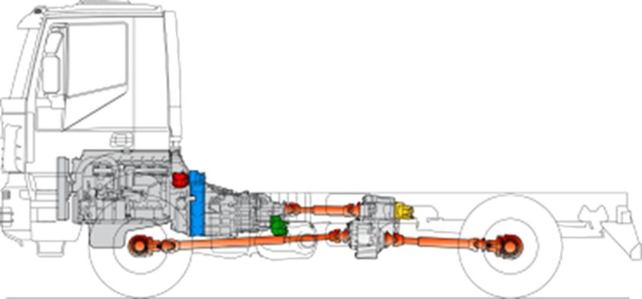
Almost all truck manufacturers produce off-road versions. Many of these off-road trucks have good operational parameters but poor durability. They are suitable for short-term off-road loads, for example only for exiting the construction site to the paved road, but they are not suitable for all-day work in severe off-road conditions.
Different countries have different requirements for compliance with emission standards. That’s why we offer off-road base chassis compliant with EURO 3, EURO 5 & EURO 6 emission standards. Taking into account all operational specifics and technical parameters, we prioritize working with the following bases off-road chassis:
1. All-terrain heavy-duty trucks
VOLVO, CATERPILLAR, HYUNDAI, and BELL manufacture some of the world’s most rugged and reliable machines. VOLVO, CATERPILLAR, HYUNDAI, and BELL trucks operate flawlessly in the harshest conditions on different continents and countries, such as mines, construction sites, quarries, forests, deserts, swamps, etc. Their high power, cross-country ability, and productivity make them the best-preferred trucks in the harshest working conditions. The VOLVO, CATERPILLAR, HYUNDAI, and BELL all-terrain heavy-duty fire trucks with clearance of up to 600+ mm and carry up to 55,000 L of water without a trailer. They are 2-in-1 and combine a fire truck’s highest technical and operational qualities with fire tractors.
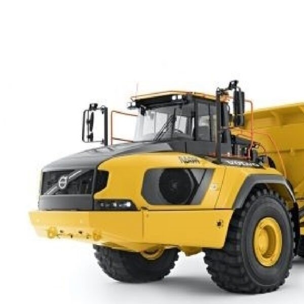
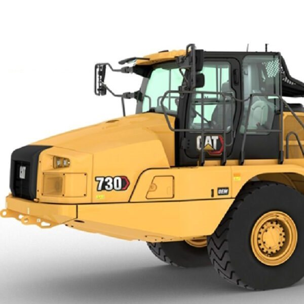
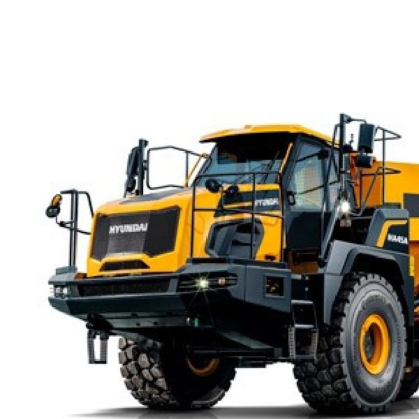
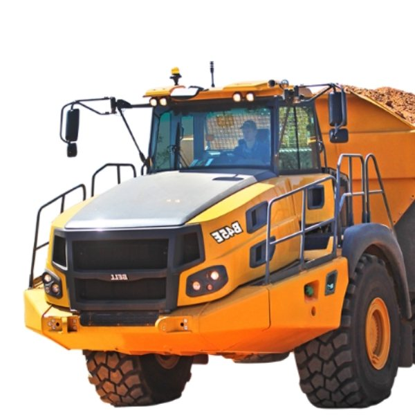
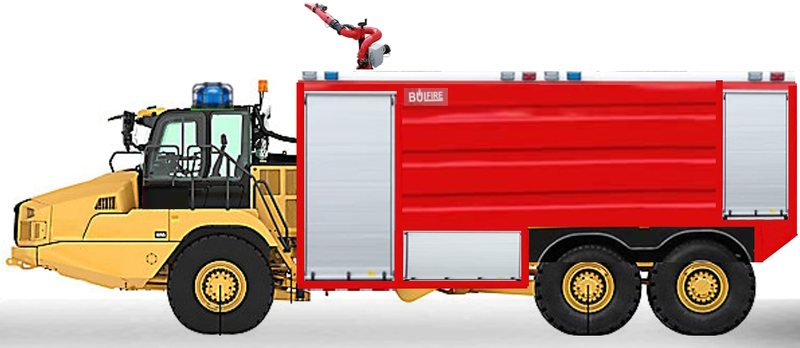
Main technical parameters of all-terrain heavy-duty fire trucks on base chassis VOLVO, and CATERPILLAR (CAT)
| Fire truck type: Base chassis: VOLVO Base chassis: CAT | BULFIRE VBF 30 CBF 30 | BULFIRE VBF 35 CBF 35 | BULFIRE VBF 40 CBF 40 | BULFIRE VBF 45 CBF 45 | BULFIRE VBF 55 CBF 55 |
|---|---|---|---|---|---|
| Base chassis type: VOLVO (Made in EU & US) CAT (Made in UK & US) | VOLVO A30G CAT725 | VOLVO A35G CAT730 | VOLVO A40G CAT735 | VOLVO A45G CAT740 | VOLVO A60G CAT745 |
| Diesel Engine type: VOLVO CAT | VOLVO D11L CAT C93 | VOLVO D13J CAT C13 | VOLVO D13J CAT C13 | VOLVO D16J CAT C15 | VOLVO D16J CAT C18 |
| Engine Power, HP: VOLVO CAT | 360 342 | 457 375 | 476 434 | 485 452 | 635 511 |
| Engine Torque, Nm: VOLVO CAT | 1950 1712 | 2386 2106 | 2500 216 | 2551 2264 | 2942 2558 |
| Displacement, L: VOLVO CAT | 10.80 9.46 | 12.80 12.49 | 12.80 12.06 | 16.10 15.17 | 16.10 18.12 |
| Emission EU standard: VOLVO CAT | EU Stage V EU Stage IV | EU Stage V EU Stage IV | EU Stage V EU Stage IV | EU Stage V EU Stage IV | EU Stage V EU Stage IV |
| Wheel configuration: VOLVO CAT | 6×6 6×6 | 6×6 6×6 | 6×6 6×6 | 6×6 6×6 | 6×6 6×6 |
| Clearance, mm: VOLVO CAT | 466/592 539 | 500/592 545 | 553/645 545 | 553/645 588 | 601/727 588 |
| Wheel Base, mm: VOLVO CAT | 4175 4181 | 4578 5465 | 4518 4126 | 4518 4126 | 5050 5801 |
| Width without mirrors, mm VOLVO CAT | 2976 2950 | 3216 2950 | 3430 2950 | 3430 3500 | 3989 3500 |
| Maximum speed, km/h VOLVO CAT | 52.7 58.0 | 57.0 54.7 | 57.0 56.3 | 57.0 56.3 | 55.0 54.7 |
| Payload water & foam, L VOLVO CAT | 30.000 30.000 | 35.000 35.000 | 40.000 40.000 | 45.000 45.000 | 55.000 55.000 |
| Fire pump, Made in Flow rate: At Normal pressure 10 bar At High pressure 40 bar | EU/UK/US L/min: 2.000 – 13.000 250 – 400 | EU/UK/US L/min: 2.000 – 13.000 250 – 400 | EU/UK/US L/min: 2.000 – 13.000 250 – 400 | EU/UK/US L/min: 2.000 – 13.000 250 – 400 | EU/UK/US L/min: 2.000 – 13.000 250 – 400 |
NOTE!
Some parameters may change depending on the regulations of the country where the fire truck will be used (Europe or the United States) and the buyer’s specific requirements.
When preparing a technical offer upon specific request from the buyer, all technical operational parameters will be tailored to the regional specifics and the buyer’s particular requirements.
One VOLVO or CATERPILLAR all-terrain heavy-duty truck fire truck with 40 – 55 tons of water capacity can equal about 10 fire trucks for extinguishing urban fires. These highly technical parameters make VOLVO and CATERPILLAR trucks extremely efficient and economical from an operation and investment point of view.
For example:
- From an operational point of view:
- 10 fire trucks with 10 drivers on-road or off-road to put out fires in cities cannot go into difficult-to-reach terrain where one heavy-duty fire truck, VOLVO or CATERPILLAR, will go and cannot perform the extinguishing work that VOLVO or CATERPILLAR will perform.
- 10 fire trucks with 10 drivers on-road or off-road to put out fires in cities will consume much more fuel than one heavy-duty fire truck, VOLVO or CATERPILLAR.
- The subtraction of 10 or 20 fire trucks from cities with 10 – 20 drivers to fight urban fires to replace 1 – 2 heavy-duty fire trucks, VOLVO, or CATERPILLAR, to fight forest fires will in practice deprive cities of effective fire protection.
Below is information about two types of off-road truck chassis IVECO ASTRA & Mercedes-Benz Zetros suitable for fire vehicles for extinguishing forest fires.
Off-road trucks IVECO ASTRA & Mercedes-Benz Zetros
Trucks with 4×4 wheel configuration
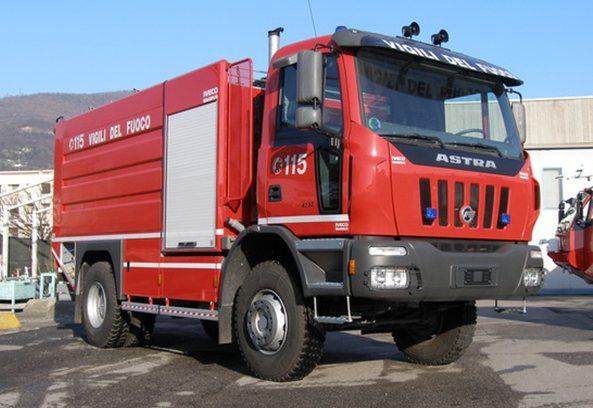
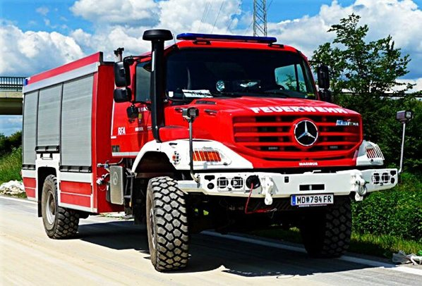
IVECO ASTRA 4×4
- GVW
- 21.000 kg / 25.000 kg
- Type of base chassis
- Rigid or Tractor
- Payload
- 12.000 kg / 15.000 kg
- Gross weight of Composition
- 55.000 kg
- Engine emission standard
- EURO 3/5/6
- Engine power
- 380 hp – 480 hp
- Engine torque
- 1.800 Nm – 2.200 Nm
- Clearance
- 320 mm – 420 mm
Mercedes-Benz Zetros 4×4
- GVW
- 18.000 kg
- Type of base chassis
- Rigid or Tractor
- Payload
- 10.000 kg
- Gross weight of Composition
- 35.000 kg
- Engine emission standard
- EURO 5
- Engine power
- 326 hp
- Engine torque
- 1.300 Nm
- Clearance
- 320 mm – 420 mm
Trucks with 6×6 / 6×4 wheel configuration
IVECO ASTRA 6×6 / 6×4
- GVW
- 32.000 kg / 40.000 kg
- Type of base chassis
- Rigid or Tractor
- Payload
- 28.000 kg – 30,000 kg
- Gross weight of Composition
- 121.500 kg
- Engine emission standard
- EURO 3/5/6
- Engine power
- 450 hp / 500 hp / 560 hp
- Engine torque
- 2.200 Nm / 2.300 Nm / 2.500 Nm
- Clearance
- 320 mm – 420 mm
Mercedes-Benz Zetros 6×6 / 6×4
- GVW
- 27.000 kg / 36.000 kg / 40.000 kg
- Type of base chassis
- Rigid or Tractor
- Payload
- 18.000 kg – 28.000 kg
- Gross weight of Composition
- 65.000 kg
- Engine emission standard
- EURO 3/5
- Engine power
- 428 hp
- Engine torque
- 2.100 Nm
- Clearance
- 320 mm – 420 mm
Trucks with 8×8 / 8×4 wheel configuration
IVECO ASTRA Rigid 8×8 / 8×4
- GVW
- 50.000 kg
- Type of base chassis
- Rigid
- Payload
- 42.000 kg
- Gross weight of Composition
- 121.500 kg
- Engine emission standard
- EURO 3/5/6
- Engine power
- 440 hp / 480 hp / 540 hp
- Engine torque
- 2.200 Nm / 2.300 Nm / 2.500 Nm
- Clearance
- 320 mm – 420 mm
IVECO ASTRA Tractor 8×8 / 8×4
- GVW
- 32.000 kg / 50.000 kg
- Type of base chassis
- Tractor
- Payload
- 24.000 kg
- Gross weight of Composition
- 121.500 kg
- Engine emission standard
- EURO 3/5/6
- Engine power
- 440 hp / 480 hp / 540 hp
- Engine torque
- 2.200 Nm / 2.300 Nm / 2.350 Nm
- Clearance
- 320 mm – 420 mm
Each base chassis is manufactured for individual orders according to the type of off-road truck and the customer’s specific operational requirements. To increase the volume and load capacity of the trucks, it is possible to order the IVECO ASTRA trucks with a chassis width of 2.90 m. This does not contradict the road traffic law, because the law allows road traffic with oversized dimensions up to 2 x 0.2 m (total 0.4 m) only with additional signalling of the truck.
According to the road traffic law, the permissible axle load of the truck and trailer is a maximum of 9,000 kg. This limitation significantly affects the total amount of extinguishing agents carried by the fire truck and fire trailer. The table below shows the total amount of extinguishing agents subject to the maximum limit of 9,000 kg per axle.
| Type of off-road fire truck & fire trailer | Wheel configuration Truck – Trailer | Amount of exting. agent in a fire truck | Amount of exting. agent in a fire trailer | Total amount of extinguishing agent |
|---|---|---|---|---|
| Mercedes-Benz Zetros | 4×4 – 2 axles | 5.000 kg | 15.000 kg | 20.000 kg |
| Mercedes-Benz Zetros | 6×6 / 6×4 – 3 axles | 15.000 kg | 30.000 kg | 45.000 kg |
| IVECO ASTRA | 4×4 – 4 axles | 5.000 kg | 25.000 kg | 30.000 kg |
| IVECO ASTRA | 6×6 / 6×4 – 4 axles | 15.000 kg | 50.000 kg | 40.000 kg |
| IVECO ASTRA | 8×8 / 8×4 – 4 axles | 20.000 kg | 25.000 kg | 45.000 kg |
When liquidating the consequences of natural disasters – fires, floods, earthquakes, or industrial accidents in many countries, the road traffic law allows a special mode of movement of the equipment involved in this activity. Under these conditions, road traffic law restrictions are not respected and fire trucks and fire trailers have the following capacity of extinguishing agents:
| Type of off-road fire truck & fire trailer | Wheel configuration Truck – Trailer | Amount of exting. agent in a fire truck | Amount of exting. agent in a fire trailer | Total amount of extinguishing agent |
|---|---|---|---|---|
| Mercedes-Benz Zetros | 4×4 – 2 axles | 10.000 kg | 20.000 kg | 30.000 kg |
| Mercedes-Benz Zetros | 6×6 / 6×4 – 4 axles | 20.000 kg | 30.000 kg | 50.000 kg |
| IVECO ASTRA | 4×4 – 3 axles | 10.000 kg | 30.000 kg | 40.000 kg |
| IVECO ASTRA | 6×6 / 6×4 – 4 axles | 25.000 kg | 50.000 kg | 75.000 kg |
| IVECO ASTRA | 8×8 / 8×4 – 4 axles | 30.000 kg | 70.000 kg | 100.000 kg |
Off-road fire trucks and fire trailers are equipped with water tanks and a converter made of non-rusting materials – stainless steel or high-density polyethylene. They have the best fire pumps produced in Europe or the USA. The additional equipment for fire trucks and fire trailers includes light portable motor pumps to be used for firefighting, protective equipment for firefighters, and additional technical equipment and hand tools used in extinguishing forest fires.
Loading fire helicopters with water
Firefighting helicopters are used to extinguish fires in rocky mountain areas or forest areas with very steep terrain where vehicle movement is impossible. Firefighting helicopters carry relatively small amounts of water, which requires them to be very often refuelled with water. Frequent refuelling of firefighting helicopters with water significantly reduces their efficiency because most of the time is not spent fighting the fire but is spent going and returning to the water reservoirs to be refilled, which are often many kilometres from the fire site.
The presence of all-terrain and off-road fire fighting vehicles or fire tractors with trailers carrying large quantities of water (25.000 L – 55.000 L) makes it possible to supply water to other fire trucks and helicopters involved in extinguishing the fire. Loading the helicopters with water at the scene of the fire significantly increases their efficiency and minimizes the time for going and returning from distant water bodies.
Helicopters designed for firefighting come in two types – with an internal or external water tank.
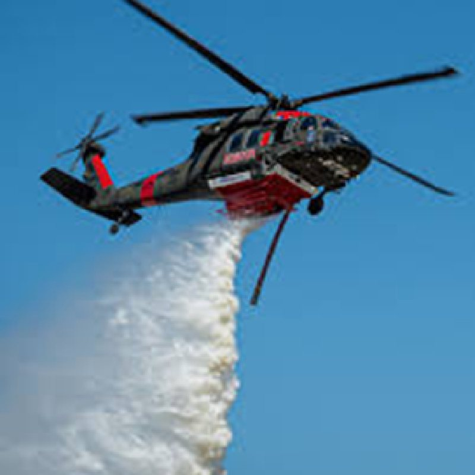
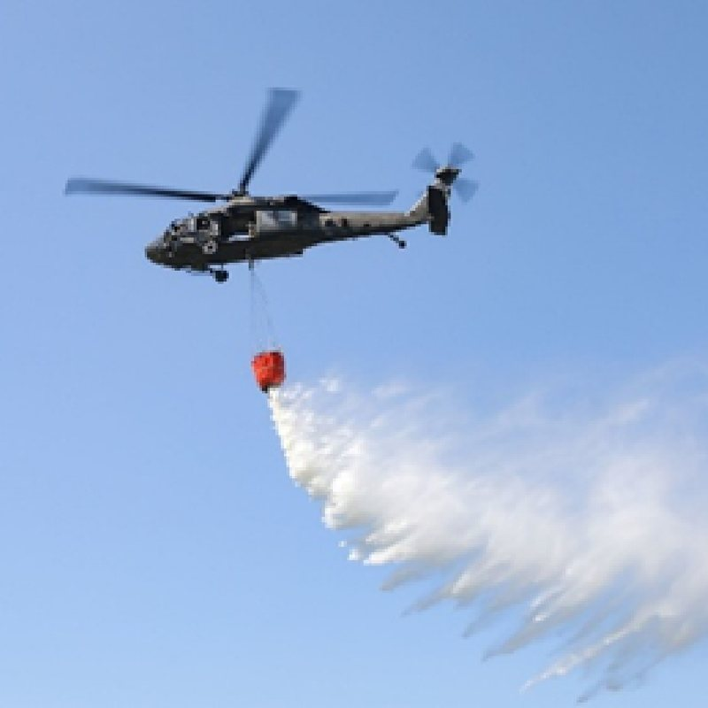
Firefighting helicopters with an internal tank can be filled with water directly from fire trucks and fire tractors or through an intermediate flexible tank filled with water from fire trucks or tractors carrying large quantities of water.
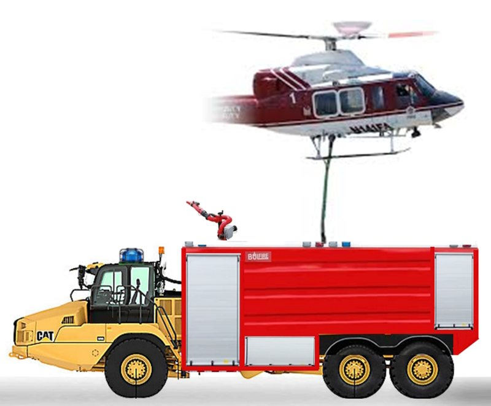
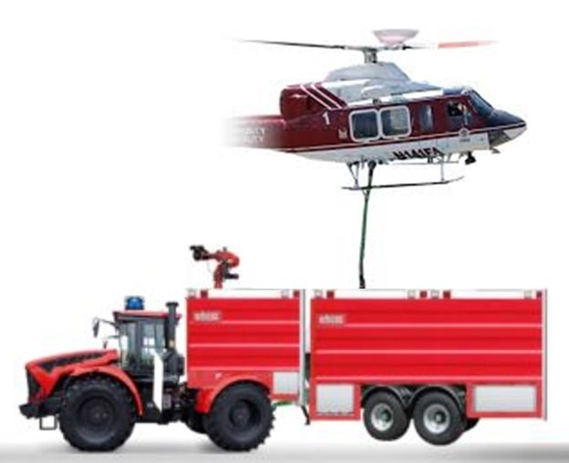
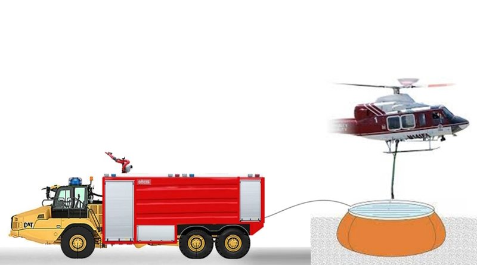
Firefighting helicopters with an external tank are filled with water through an intermediate flexible tank.
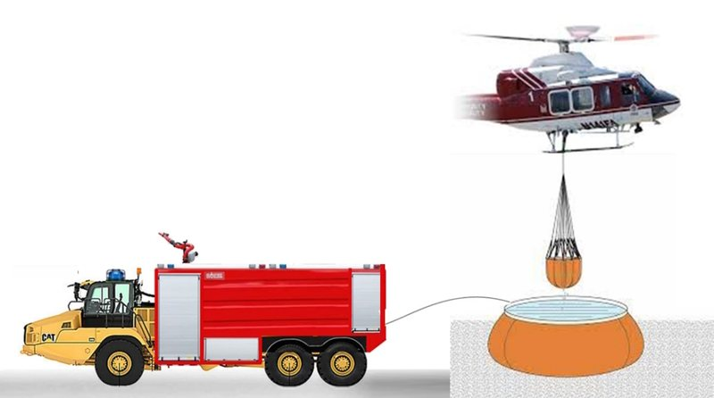
IMPORTANT!
When recharging helicopters with water not from a dam but on-site at the fire from a fire truck or fire tractor carrying large quantities of water, there is another major advantage besides saving time for recharging. This is the difference in the water composition that helicopters use for firefighting.
Water recharged from a dam or other water source has a high surface tension at the molecular level. This leads to the encapsulation of the water droplets, which seriously impairs the water’s extinguishing properties when it hits burning materials. The water provided by a fire truck or fire tractor to fill the helicopter has added and precisely dosed surfactants to reduce the surface tension of the water. This leads to a sharp increase in the extinguishing efficiency of the water used by the helicopter when extinguishing forest fires.
Fire fighting vehicles for rapid response
Every major forest fire that covers a large area starts from a small fire. In large fires, the wind blows burning branches, which create new small fires. If these new small fires are not extinguished in time, they will grow and turn into a large forest fire. Therefore, it is very important to have rapid-response fire trucks with high cross-country ability, which can quickly move through the forest terrains and extinguish the newly formed fires.
The rapid response fire fighting vehicles that BULFIRE Ltd. offers have high clearance, are equipped with water tanks with a capacity of 500 L up to 2.000 L, tanks with a wetting agent of 30 L up to 100 L, which significantly increases the extinguishing efficiency of the water, and high-pressure fire pumps, 40 bar to 200 bar + pumps for normal pressure 10 bar as an optional. Fire trucks for rapid response in the city are available on robust VOLKSWAGEN Crafter chassis. Fire trucks for rapid response in forest and mountain fires are available on robust all-terrain UTV chassis.
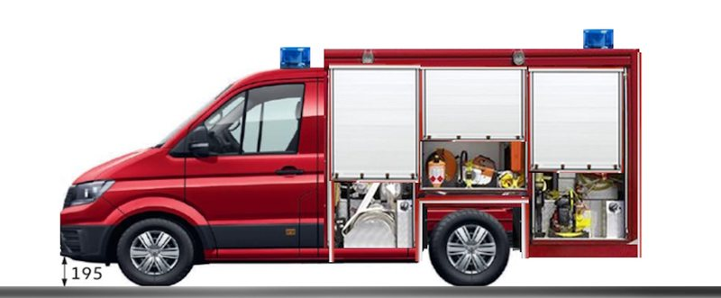
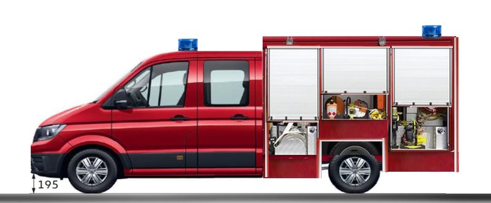
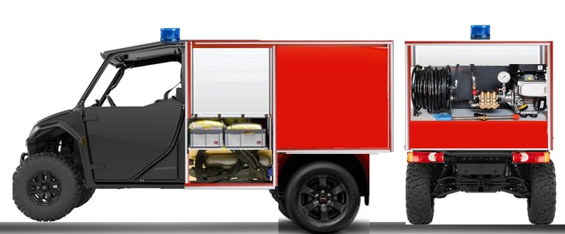
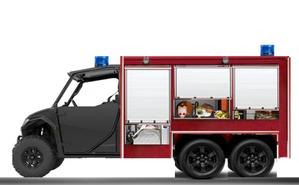
Main technical parameters of rapid response fire fighting vehicles
| Type of base chassis Parameters | VOLKSWAGEN 4×2 & 4×4 | VOLKSWAGEN 4×2 & 4×4 | UTV 4×4 | UTV 6×4 |
|---|---|---|---|---|
| Vehicle type | BFRRVW35 | BFRRVW55 | BFUTV4 | BFUTV6 |
| Type of base chassis | VOLKSWAGEN Crafter GVW 3.5t | VOLKSWAGEN Crafter GVW 5.5t | UTV Fugleman UT10 GREW X | UTV Fugleman UT10 GREW X |
| Engine | Diesel 4 cylinders 4 stroke | Diesel 4 cylinders 4 stroke | Gasoline 2 cylind. 4 stroke Gasol. + LPG (opt.) | Gasoline 2 cylind. 4 stroke Gasol. + LPG (opt.) |
| Engine displacement | 2.0 L | 2.0 L | 1.0 L | 1.0 L |
| Engine power | 163 hp | 163 hp | 105 hp | 105 hp |
| Torque | 230 Nm | 320 Nm | 94 Nm | 94 Nm |
| Cabin seats – Single cab Double cab, 4 doors | 2 (1+1) or 3 (2+1) 7 (6+1) or 6 (5+1) | 2 (1+1) or 3 (2+1) 7 (6+1) or 6 (5+1) | 3 (2+1) | 3 (2+1) |
| Wheel configuration (FWD, AWD, 4WD) | 4×2 4×4 | 4×2 4×4 | 4×4 4×2 – possible | 6×4 6×2 – possible |
| Differential lock | – | – | Front and rear differential lock | Front and rear differential lock |
| Wheelbase, mm | 3640 & 4490 | 3640 & 4490 | 2.985 mm | 3.750 mm |
| Clearance | 195 mm | 195 mm | 320 mm | 320 mm |
| Amount of water | 1.000 L | 2.000 L | 500 L | 1.200 L |
| Amount of wetting agent | 50 L | 100 L | 30 L | 60 L |
| High-pressure pump Normal-pressure pump | 40 bar – 200 bar 10 bar (optional) | 40 bar – 200 bar 10 bar (optional) | 40 bar – 200 bar – | 40 bar – 200 bar 10 bar (optional) |
| Pumps high-rate flow Pumps normal-rate flow | 15 up to 75 L/min 1.000 L/min (opt.) | 15 up to 75 L/min 2.000 L/min (opt.) | 5 up to 75 L/min – | 15 up to 75 L/min 1.000 L/min (opt.) |
| Extinguishing nozzles | 1 | 1 + 1 (optional) | 1 | 1 + 1 (optional) |
| Length of fire hose | 60 m | 30 m or 60 m | 60 m | 30 m or 60 m |
| Liquid fuel tank LPG (optional) | 75 L – | 75 L – | 45 L 60 L | 45 L 60 L |
| Length, mm | 4.9000 & 5.900 | 4.9000 & 5.900 | 4.000 mm | 5.300 mm |
| Width | 2.000 mm | 2.000 mm | 1.650 mm | 1.800 mm |
| Maximum speed | 90 km/h | 90 km/h | 90 km/h | 90 km/h |
The high cross-country ability and great manoeuvrability in both the forest and the city, combined with the high extinguishing efficiency of the high-pressure pumps, and the extremely low price, make these fire engines for rapid response extremely suitable for both fire departments and volunteer fire services with limited budgets.
Equipping municipal fire departments and volunteer fire departments with a package of (1+1) fire trucks – 1 for rapid response in the city + 1 for rapid response in the forest is an extremely economical and effective solution for any fire department.